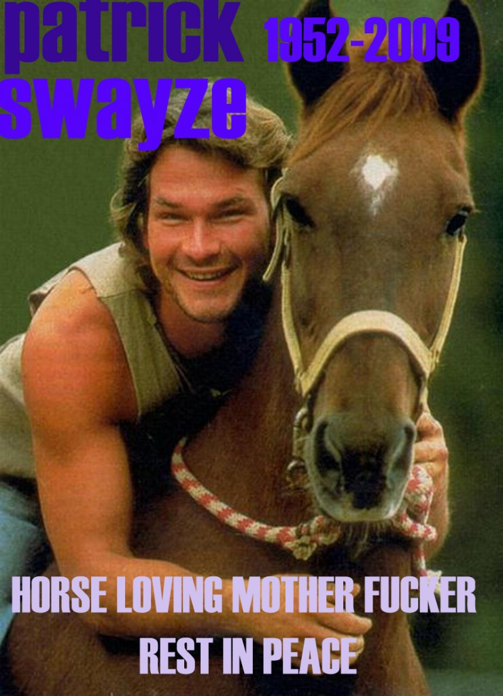

The World Mourns the Loss of Its Dirtiest Dancer


Peace out!
Related posts

How to Tell Your Friends About EMToast in the Real World
A small clarification for anyone trying to mention EMToast out loud without accidentally sending people to the wrong website. The…

World Health Organization Announces Solution to Global Pandemic: Just Stop Being Sick
In a groundbreaking announcement that has left the world in amazement, the World Health Organization (WHO) has declared that the…

A History of The World by Fritzy McGee
200 years ago people lived in caves and wore animal skins and cleaned chimneys with the bones of small children…

Who Is Satan's Best Friend in the World?... You'll Be Distressed
“The Oracle” where a select group is asked to answer unknown questions and to ask unanswerable questions. These are submitted…